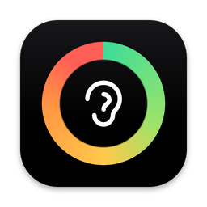

SafeEarSafeEar 팀(이하 "팀")이 만든 SafeEar 앱(이하 "서비스")을 쓸 때 서로 지킬 약속이에요.
이어폰·헤드폰 사용 습관으로 귀 피로도, 음역별 부담, 쉬었을 때 변화, 10년 뒤 시나리오를 보여 줘요. 숫자는 습관을 비교하기 위한 참고값이에요.
난청을 진단하거나 치료하지 않아요. 귀가 걱정되면 이비인후과에서 검사를 받아 주세요.
만 14세 이상이고 약관과 개인정보 처리에 동의하면 가입할 수 있어요. 로그인하지 않아도 이 기기 안에서 쓸 수 있어요.
더 좋게 만들려고 기능을 바꾸거나 멈출 수 있어요. 중요한 변경은 앱에서 미리 알려 드려요.
앱 설정에서 언제든 탈퇴할 수 있고, 서버에 있던 기록은 바로 지워져요.
팀은 서비스의 추정값을 보고 내린 판단과 그 결과에 대해, 고의나 큰 잘못이 없는 한 책임지지 않아요.
These are the promises between you and the SafeEar team (“the team”) when you use the SafeEar app (“the service”).
It shows ear fatigue, load by pitch, change with rest, and a 10-year scenario based on your earphone and headphone habits. The numbers are reference values for comparing habits.
It does not diagnose or treat hearing loss. If you are worried about your ears, get checked by an ENT doctor.
You can sign up if you are 14 or older and agree to these terms and the handling of personal information. You can also use the app on one device without signing in.
We may change or stop features to improve the service. Important changes will be announced in the app in advance.
You can delete your account in the app's settings at any time, and your records on the server are deleted right away.
Unless there is intent or gross negligence, the team is not responsible for decisions made based on the service's estimates or their results.